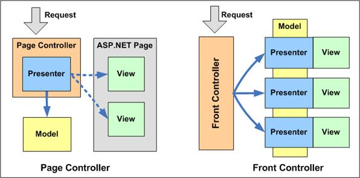

Spring Dispatcher Servlet
Spring MVC Framework의 유일한 Front Controller인 DispatcherServlet은 Spring MVC의 핵심 요소이다. DispatcherServlet은 Controller로 향하는 모든 웹요청의 진입점이며, 웹요청을 처리하며, 결과 데이터를 Client에게 응답 한다. DispatcherServlet은 Spring MVC의 웹요청 Life Cycle을 주관한다 할 수 있다.
Front Controller Pattern
Dispatcher Servlet이 없는 MVC Model2 방식에서는 Servlet을 생성하면 각각의 mapping-url을 web.xml에 설정해 줘야하는 번거로움이 있었다. Front Controller Pattern을 접목한 Spring은 Dispatcher Servlet하나만 web.xml에 등록하여, 더 효과적으로 MVC패턴을 사용할 수 있도록 변경 되었다.

Spring에서는 모든 요청이 Dispatcher Servlet으로 오게 된다.
모든 요청에 대해 Dispatcher Servlet에 등록된 Handler Mapping(대표적으로 RequestMappingHandlerAdapter)을 통해 Controller에 개발자가 정의한 로직을 호출 하도록 해준다.
자세한 Cycle은 아래 그림과 같다.
Dispatcher Servlet Cycle

- doService 메소드에서부터 웹요청의 처리가 시작된다. DispatcherServlet에서 사용되는 몇몇 정보를 request 객체에 담는 작업을 한 후 doDispatch() 메소드를 호출한다.
- 아래 3번~13번 작업이 doDispatch 메소드안에 있다. Controller, View 등의 컴포넌트들을 이용한 실제적인 웹요청처리가 이루어 진다.
- getHandler() 메소드는 RequestMapping 객체를 이용해서 요청에 해당하는 Controller를 얻게 된다.
- 요청에 해당하는 Handler를 찾았다면 Handler를 HandlerExecutionChain 객체에 담아 리턴하는데, 이때 HandlerExecutionChain는 요청에 해당하는 interceptor들이 있다면 함께 담아 리턴한다.
- 실행될 interceptor들이 있다면 interceptor의 preHandle() 메소드를 차례로 실행한다.
- Controller의 인스턴스는 HandlerExecutionChain의 getHandler() 메소드를 이용해서 얻는다.
- HandlerMapping과 마찬가지로 여러개의 HanlderAdaptor를 설정할 수 있는데, getHandlerAdaptor() 메소드는 Controller에 적절한 HanlderAdaptor 하나를 리턴한다.
- 선택된 HanlderAdaptor의 handle() 메소드가 실행되는데, 실제 실행은 파라미터로 넘겨 받은 Controller를 실행한다.
- 계층형 Controller인 경우는 handleRequest 메소드가 실행된다. @Controller인 경우는 HandlerAdaptor(RequestMappingHandlerAdapter)가 ServletInvocableHandlerMethod 이용해 실행할 Controller의 메소드를 invoke()한다. (이 과정에서 Controller Parameter에 대한 ArgumentResolver 처리와 ReturnValue에 대한 ReturnValueHandler에 대한 처리가 이루어진다.)
- interceptor의 postHandle() 메소드가 실행된다.
- resolveViewName() 메소드는 논리적 뷰 이름을 가지고 해당 View 객체를 반환한다.
- Model 객체의 데이터를 보여주기 위해 해당 View 객체의 render() 메소드가 수행된다.
web.xml 설정하기
기본 설정
1 | <web-app> <!-- appServlet 웹어플리케이션의 모든 웹요청을 DispatcherServlet이 처리한다.--> |
appServlet 웹 어플리케이션의 모든 요청을 Dispatcher Servlet이 처리하게 된다.
Dispatcher Servlet도 Servlet이기 때문에 web.xml에 등록하며, / prefix로 들어오는 모든 요청을 처리한다.
servlet-name은 DispatcherServlet이 기본(default)으로 참조할 빈 설정 파일 이름의 prefix가 되는데, (servlet-name)-servlet.xml 같은 형태이다. 위 예제와 같이 web.xml을 작성했다면 DispatcherServlet은 기본으로 /WEB-INF/appServlet-servlet.xml을 찾게 된다.
contextConfigLocation을 이용한 설정
빈 설정 파일(xml파일)을 하나 이상을 사용하거나, 파일 이름과 경로를 직접 지정해주고 싶다면 contextConfigLocation 라는 초기화 파라미터 값에 빈 설정 파일 경로를 설정해준다.
1 | <servlet> |
ContextLoaderListener를 이용한 설정
일반적으로 빈 설정 파일은 하나의 파일만 사용되기 보다는 persistance, service, web등 layer 단위로 나뉘게 된다.
또한, 같은 persistance, service layer의 빈을 2개 이상의 DispatcherServlet이 공통으로 사용할 경우도 있다.
이럴때는 공통빈(persistance, service)설정 정보는 ApplicationContext에, web layer의 빈들은 WebApplicationContext에 저장하는 아래와 같은 방법을 추천한다.
공통빈 설정 파일은 서블릿 리스너로 등록된 org.springframework.web.context.ContextLoaderListener로 로딩해서 ApplicationContext을 만들고,
web layer의 빈설정 파일은 DispatcherServlet이 로딩해서 WebApplicationContext을 만든다.
1 | <!-- ApplicationContext 빈 설정 파일--> |
맨위에 설정한 Application Context에서 정의 한 설정파일은 모든 Servlet에서 참조 될 수 있다.
(선언은 하지 않았지만, Global 개념으로 생각하면 될 것 같다.)
따라서
employee Servlet에는 myapp-service, myapp-dao, myapp-servlet에 대한 설정을 가지고 있고,
webServices Servlet에는 myapp-service, myapp-dao, myapp-webservice에 대한 설정을 가지고 있다.
참고
http://mangkyu.tistory.com/18
http://www.egovframe.org/wiki/doku.php?id=egovframework:rte:ptl:dispatcherservlet
http://hermeslog.tistory.com/156
https://github.com/dongmyo/dispatcher2
https://justforchangesake.wordpress.com/2014/05/07/spring-mvc-request-life-cycle/
https://nesoy.github.io/articles/2017-02/Front-Controller
http://wonwoo.ml/index.php/post/1590